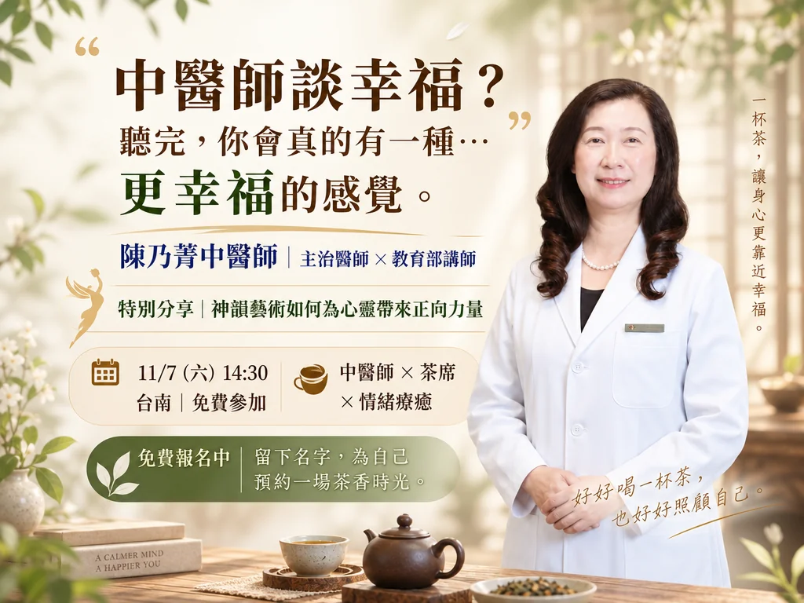

身體在提醒你
明明沒有大問題，卻容易累、緊繃，或總覺得身體哪裡不太對勁。
免費公益講座・事先預約
陳乃菁中醫師 × 身體 × 情緒 × 幸福
我們總忙著照顧工作、家庭和身邊的人，卻很少停下來照顧自己。
這個下午，聽陳乃菁中醫師從中醫與日常生活，聊聊身體、情緒與幸福。
免費參加・一次可報名 1–2 位・歡迎與親友同行

你是不是也曾經有過這樣的感覺？
事情很多、心裡很忙，想休息卻不容易真正放鬆；照顧工作、家庭和身邊的人久了，反而常常忘了問自己：「最近的我，過得好嗎？」
明明沒有大問題，卻容易累、緊繃，或總覺得身體哪裡不太對勁。
事情做完一件又一件，但情緒與壓力，好像沒有真正被放下。
習慣先顧好別人，卻很少留一段時間，重新感受自己的身體與心。
陳乃菁 中醫師
現任台南市裕信中醫診所主治醫師
我們常把「健康」想到飲食、睡眠或身體有沒有不舒服，但每天的情緒、心境與生活節奏，也會影響我們怎麼感受自己的身體、怎麼感受生活。
這個下午，陳乃菁中醫師想從中醫與日常生活的角度，陪大家重新看看：身體、情緒與幸福之間，究竟有什麼關係？
也許幸福不是多得到一些什麼，
而是重新學會感受自己的身體，也照顧自己的心。
這個下午，希望你帶走的不是一堆知識
開始留意身體正在告訴你的訊息，不再只等到不舒服才注意它。
知道身體與心情不是完全分開的，也給自己多一點理解與空間。
幸福不一定很遠，也可能從每天怎麼照顧自己開始。
午後特別分享
茶席中，我們也安排一段神韻藝術分享，從音樂、舞蹈與文化之美，感受藝術帶給人的平靜與美好。
沒有看過神韻也完全沒關係，輕鬆聽聽就好。
時間與地點
報名窗口｜謝小姐
0910-283-352
免費入場，敬請預約。下午 2:00 品茗入席，下午 2:30 開始，下午 4:30 結束。
席次預約
活動免費參加，採事先報名。送出後請確認畫面顯示「報名完成」，主辦單位將於活動前依報名資料與您聯絡。
電話報名／報名問題洽詢：謝小姐
0910-283-352我們已收到您的報名資料。請記下 11/7 的午後茶席，活動前將依報名資料與您聯絡。
報名前，你可能想知道
活動以陳乃菁中醫師「身體、情緒與幸福」主題分享為核心，搭配品茗與茶敘交流，並安排一段神韻藝術特別分享。
可以。神韻藝術分享由另一位專業講師進行，會以容易理解的方式談藝術帶給人的感動與正向力量，不需要事先了解神韻。
可以。一次最多可報名 2 位，請填寫每一位實際參加者的姓名、手機，以利確認茶席；職業為選填。
本場為公益講座，免費參加，採事先預約制。現場備有茶席，帶著自己來就可以。